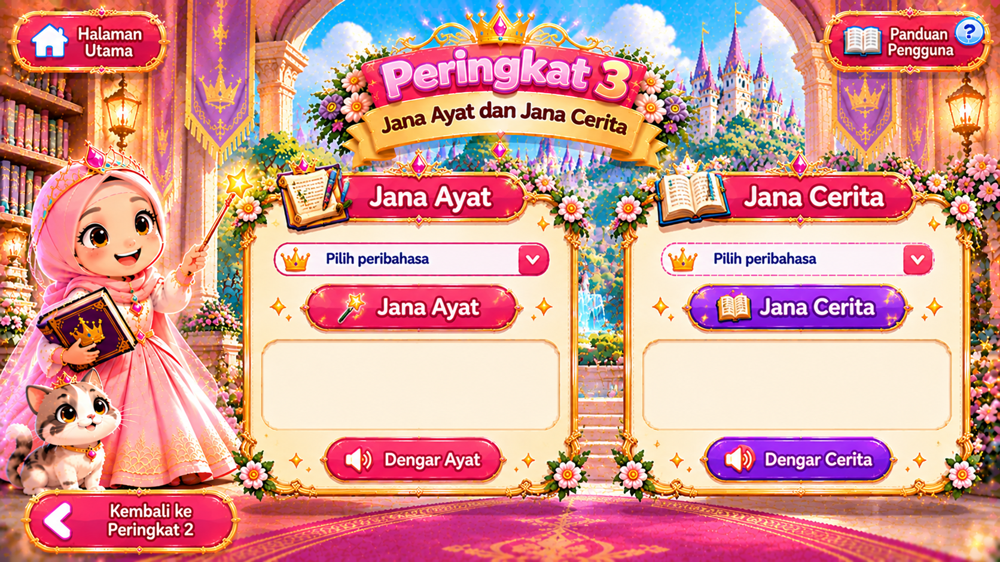

Pilih kad ayat di sebelah kanan untuk memainkan video yang sepadan.

Pilih peribahasa
Pilih peribahasa
Ayat akan muncul selepas menekan Jana Ayat.
Cerita akan muncul selepas menekan Jana Cerita.
📖 Panduan Pengguna
Halaman utama: tekan terus papan tanda portal Peringkat 1, 2 atau 3 pada peta pengembaraan.
Peringkat 1: tekan kad bergambar salah satu peribahasa. Grafik peribahasa itu akan dibuka. Tekan ikon pembesar suara pada grafik untuk mendengar sebutan atau maksud.
Peringkat 2: setiap kad ayat mengandungi video sendiri, ayat dan butang audio. Tekan ▶ untuk memainkan video atau “Dengar Ayat” untuk mendengar bacaan.
Peringkat 3: pilih peribahasa dan tekan Jana Ayat atau Jana Cerita. Hasil hanya muncul selepas butang ditekan.
Nota: video menggunakan fail sedia ada dalam repositori GitHub; nama fail mesti kekal sama seperti yang ditetapkan dalam kod.